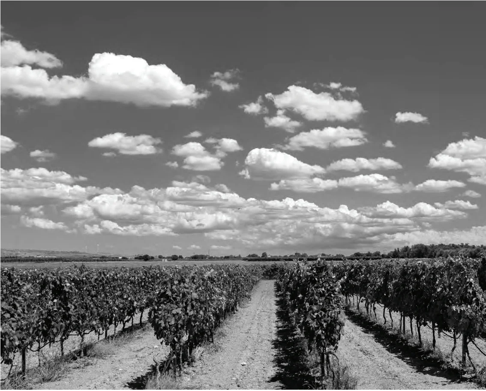
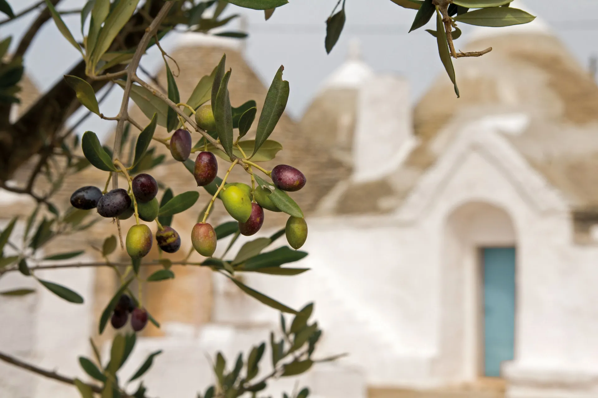

La cantina della famiglia Varvaglione.
Born in Salento, experienced worldwide.

Feudi Salentini è la cantina della famiglia Varvaglione, giunta alla 4ª generazione: 33 vini in 6 collezioni, 65 riconoscimenti dai concorsi internazionali, certificata Equalitas dal 2022.
01La famiglia

La famiglia Varvaglione.
- Cosimo
- Maria Teresa
- Marzia
- Angelo
- Francesca
Portano avanti l'azienda, giunta alla quarta generazione. La cantina è a Leporano, in provincia di Taranto.

02Il Salento
Il Salento, una terra divina.
Il Salento è ricco di castelli, di storia e di tradizioni. Feudi Salentini nasce qui, in una terra rinomata per la produzione del Primitivo di Manduria. I muretti a secco, gli uliveti con alberi secolari e il mare turchese fanno parte di uno scenario che dà vita a vino e olio.

Le torri sul mare 
Le pajare di pietra 
I muretti a secco 
Gli ulivi secolari 
Il mare turchese
03La vigna
La nostra filosofia.
Feudi Salentini produce vini dai vitigni autoctoni pugliesi per eccellenza, usando tecniche di vinificazione moderne, con un occhio all'ambiente per salvaguardare la terra.
04Sostenibilità
Sostenibilità.
Dal 2022 Feudi Salentini è certificata Equalitas, lo standard che valuta la sostenibilità ambientale, sociale ed economica delle aziende del vino. I fatti dal Bilancio di sostenibilità 2025.

papaveri fra i filari - 100%
dei fornitori di vino è certificato Equalitas e sostenibile. La certificazione guarda anche alle persone: condizioni di lavoro eque e progetti sociali e culturali sul territorio.
- 2025
Impronta di carbonio e impronta idrica calcolate per la prima volta, sui dati del 2024, secondo le norme UNI EN ISO 14064:2018 e ISO 14046:2014.
- 100%
delle bottiglie è chiuso con tappi Nomacorc; i Nomacorc Green sono fatti con polimeri vegetali ricavati dalla canna da zucchero.
- 0
turnover nel 2025, con i contratti a tempo indeterminato saliti del 75%. Dal 2025 c'è il Piano Welfare 3 Cuori.
- WWF
Nel 2025 Feudi Salentini ha fornito attrezzature al WWF di Taranto per la tutela dell'ambiente.
- GRI
Ogni fase della produzione è documentata; la rendicontazione si sta allineando agli standard del Global Reporting Initiative.
Bilancio di sostenibilità 2025
Scarica il PDF (2,9 MB)
05Riconoscimenti
65 riconoscimenti.
Tutti i riconoscimenti, vino per vino
| Anno | Vino | Concorso | Medaglia |
|---|
06Notizie
Dalla cantina.
07I vini